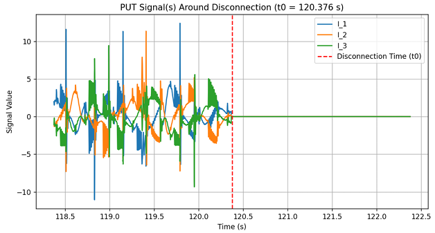

Hello, I'm Antoine and
See My Projects
About

Since childhood, I have always been extremely curious about how everything around me works, which led me to carry out numerous DIY projects.
This desire to understand and create solutions led me to specialize in industrial engineering, with a focus on energy and mechatronics
Today, I am ready to turn that passion into my profession.
Skills
As an aspiring Mechatronics & Energy Engineer, I bring a well-rounded blend of technical expertise and soft skills:

Mechanic
Over the course of my studies, I have developed strong mechanical competencies, including:
- Component sizing & load analysis
- Fit & tolerance calculations
- Technical drawing creation
- 3D part design using CAD
Software & Tools
- Autodesk Inventor
- Fusion 360
- Kissoft
- AutoCAD
- Mastercam
Electricity & Electronics
- Circuit theory and analysis
- Three-phase voltage and power studies
- Electric motor operation and control
- Protection principles & neutral grounding systems
- Power network dynamics & distribution
- Hands-on laboratory experimentation
Software & Tools
- Simulink Electrical
- Plexim
- E-Plan
Automation & Control
- Industrial PLC programming
- Robot programming & simulation
- Process Automation & PID Tuning
- Arduino-based prototyping
- Python & MATLAB application development
Software & Tools
- TIA Portal
- ABB RobotStudio
- Arduino IDE
- MATLAB
- Python
- VS Code
Modeling & Analysis
- System modeling with Simulink
- Performance analysis of dynamic systems
- Digital twin development
- Model verification & validation
- Hardware-in-the-loop simulation
Software & Tools
- MATLAB / Simulink
- PLECS
Energy
- Heat pump system performance analysis
- Wind turbine power output modeling
- Electric vehicle drivetrain simulation
- Heat exchanger sizing
- Solar energy harvesting & PV system sizing
- Electro-thermal building energy modeling
Transversal Skills
- Engineering ethics & professional responsibility
- Project management & team leadership
- Research project planning & execution
- Certified English proficiency (Wallangues B2)
Projects

Camera calibration applied to a laser cutter with MATLAB

Automation of a palletizing station with TIA Portal

Automated Fender Buoy Deployment

Design and build of a laser CO2 cutter

Energy Monitoring Analysis

simulink model of an electric car
